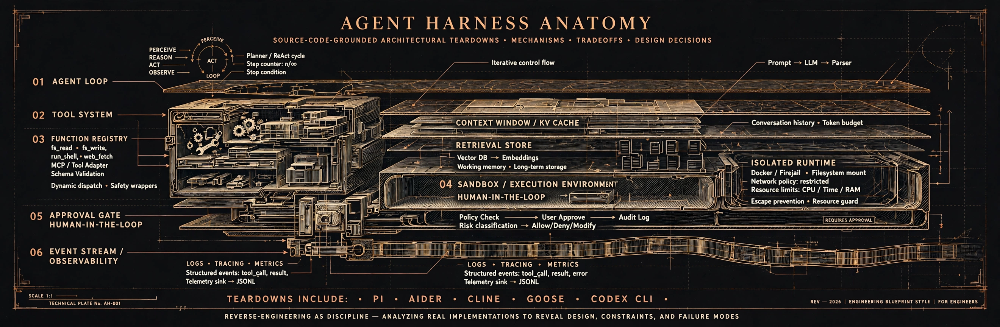

Agent Harness Anatomy
Rigorous, source-grounded architecture teardowns of AI agent harnesses. Every behavioral claim pinned to verifiable source code.
#1 — pi: the minimalist terminal harness
Two packages, one clean seam: a model-agnostic agent loop library plus a terminal coding application. Mechanism in the core, policy in extensions — no iteration cap, no built-in approvals, structured prompts diffed per turn.
#2 — aider: the pair programmer that parses prose
One LLM call per turn, then a deterministic parse→apply→verify pipeline over text edit formats — no tool calls at all. Model-aware where pi is model-agnostic: a 313-entry compatibility table, a PageRank repo map, and git as the undo system.
#3 — Cline: the approval-gated IDE resident
A host-independent agent loop behind a 224-RPC proto-bus bridge: the VS Code
webview talks to an SDK runtime it never shares memory with. Every tool call
passes a three-layer approval model with diff previews; every turn is
stash-checkpointed for /undo.
#4 — Goose: the MCP-native agent that asks a judge
Every tool is an MCP server — builtins included — behind a three-layer
approval model with an LLM judge for SmartApprove. Mid-migration between a
legacy loop {} and an effect-sourced state machine; recipes turn
prompts into runnable, schedulable programs.
#5 — Codex CLI: the sandbox-first agent that speaks one wire protocol
TUI, exec, and daemon are all clients of a single JSON-RPC app-server — one protocol, one loop. Three nested turn loops with no max_turns anywhere in the tree; tool calls descend a four-layer sandbox stack (bwrap + landlock + seccomp on Linux) and an approval chain where hooks outrank the user.
#6 — OpenHands: the event-sourced agent SDK
Everything is a typed event in a persistent tree — the LLM never sees the raw stream, only a cached incremental view with enforced invariants. Hooks intercept the event stream, a critic can veto termination, and per-completion LLM routing lets the agent swap its own model mid-run. Microagents are dead; AgentSkills-spec skills killed them.
#7 — OpenCode: the dual-runtime coding agent
Runs its session loop on two runtimes with Effect-TS dependency injection — and rebuilds the tool surface per request, so the model only ever sees the tools this turn needs. Permissions are deferred to the moment of use, and compiler feedback arrives inside the tool call via LSP, not as a separate repair loop.
#8 — Hermes Agent: the self-improving agent
The agent writes its own skills at runtime — a background review loop distills what worked into new capabilities, and a curator promotes them, on two different timescales. The harness learns from every session without a human in the loop editing prompts.
#9 — OpenClaw: the channel-first gateway
Telegram, WhatsApp, and Discord are first-class ingress — every
inbound message traverses a seven-stage admission pipeline
(runChannelTurn: ingest → classify → preflight →
resolve → assemble → dispatch → finalize) before the agent
loop ever sees it. A SQLite-backed ingress queue with dead letters keeps
turns durable, and Tool Search materializes tool definitions on demand
so most tools never enter the model context.
#10 — Gemini CLI: the routed, policy-gated terminal agent
Google's terminal coding agent re-routes the model every turn through a composite strategy chain, executes tools via a scheduler with explicit lifecycle states, and gates each call through a TOML policy engine with tiered priorities plus an eleven-hook interception system. No tool search — all 26 built-ins ride every request — and memory is JSONL plus markdown, mined nightly by a background extraction service.
#11 — SWE-agent: the research original
A benchmark harness that grew an agent: the model never sees a raw shell, only a designed agent-computer interface defined as data (YAML schemas plus container-side scripts). Per-step trajectory rewrites, a replay model, attempt-level reviewer retry loops — research instrumentation, not product — around a deliberately boring synchronous loop.
#12 — Qwen Code: the fork that outgrew its parent
Alibaba's fork of Gemini CLI, independent since v0.1 — and the fork
point predates the policy engine and router, so Qwen rebuilt both from
scratch: a rule-string permission manager with a default AUTO mode driven
by a fail-closed LLM classifier, a 13-preset multi-protocol provider
registry with deep Qwen-family wire logic, 22 hook types, Agent Teams,
and a qwen serve ACP daemon fronting channels, desktop,
mobile, and three SDKs.
#13 — Darwin Gödel Machine: the agent that rewrites itself
Sakana AI's empirical shot at recursive self-improvement: a coding agent that rewrites its own source, validates each variant on SWE-bench, and keeps an archive of past versions instead of hill-climbing — so stepping-stone agents that don't immediately win can still parent later breakthroughs. The recursion is one level deep and the honest limits are real: the diagnoser sees the private test patch, and the paper's v3 postdates the pinned code.
#14 — Autohand Code CLI: the harness that rewrites its own skills
A terminal coding agent whose headline claim is that it evolves: it generates its own skills. The mechanism is real and narrower than the word suggests — a deterministic analyzer fingerprints the project, an LLM writes a skill from that fingerprint, and the skill is regenerated when the project drifts. Nothing is learned from sessions; the experience-driven learning lives in a separate per-turn memory extraction loop.
#15 — DeepSeek Harness (dsh): the harness where even the loop is a plugin
DeepSeek's harness composes itself from YAML: the agent loop, the session service, the sandbox, and the Web UI are all plugin rows in a bundle, and the four run modes are plugin-list diffs — Standard and PTC differ by exactly one row. The session is an append-only event log that everything else folds over, approvals fail closed on any answerer malfunction, and a session-log upload to the official API is on by default.
#16 — Deep Agents: the harness that is a middleware stack, not a loop
LangChain's batteries-included agent library contains no loop of its own:
create_deep_agent() assembles an ordered middleware stack —
filesystem tools, subagent delegation, non-mutating summarization — and hands
it to LangChain's create_agent, whose graph runs on LangGraph's Pregel
runtime. This teardown reads all three layers at their own pins, down to the
super-step the turn ceiling actually counts.
#17 — Grok Build: the harness whose control plane lives on a server
xAI's CLI, open-sourced as a one-way export from an internal monorepo: some 820K lines of Rust, 103 crates, and a turn loop you can point at — an explicit loop {} with one sampler round-trip per iteration, no default turn cap, and a stationarity guard that counts identical steps (nudge at 8, hard stop at 12) as the real brake. Below it: a six-mode permission pipeline whose auto mode is an LLM classifier, an opt-in sandbox that confines the whole process before the agent boots, and a control plane whose highest tier is a server response. The egress audit is the centerpiece: the repository-upload wire types survive in full, but both producers return "unavailable in this build", and session traces are real machinery gated off by default in this tree — with a coding-data opt-out that blocks the xAI-bound path while exempting a deployment's own trace bucket.
#18 — Harness²: the harness is the thing being optimized
Google Research's recursive harness optimizer: there is no agent loop in the package — instead a budgeted search (Propose–Probe–Compose) edits the harness of a borrowed executor, OpenCode by default or Codex. The k base rollouts become evidence files; two one-sided proposer sessions — one may only fix procedure, the other may only add practitioner knowledge — edit the component tree; a validator that encodes how the substrates silently fail gates every edit; and blind selection over exactly the finals adopts one — it cannot abstain, because the base is not in the pool. The adopted tree is stored whole in a per-domain experience library for the next task. The method is score-blind by construction (its RunView type has no score field, and the judge is never imported), while the executor side runs with network access unrestricted — a split the docs disclose plainly, including a validation run where a rollout downloaded its own rubric.
Embedded Harness Anatomy — the milliwatts season
A companion series: top-down dissections of agent harnesses that run on milliwatts. Same discipline, adapted for event-driven systems under physical constraints. E1 tears down Espressif's ESP-Claw — the agent loop that waits for an invitation.
Found a mistake?
These teardowns live or die on their grounding: every behavioral claim is pinned to a release tag and commit SHA, with a line-level permalink to the source. Pins drift, code gets misread, and claims go stale — if you spot an error or have a better reading of the source, corrections are welcome as pull requests. A correction with a permalink beats a correction with an opinion.